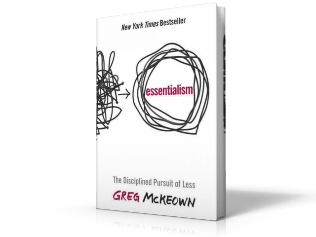

Essentialism
Author: Greg Mckeown
Favorite quotes
“Essentialism is not about how to get more things done; it’s about how to get the right things done. It doesn’t mean just doing less for the sake of less either. It is about making the wisest possible investment of your time and energy in order to operate at our highest point of contribution by doing only what is essential.”
“The word priority came into the English language in the 1400s. It was singular. It meant the very first or prior thing. It stayed singular for the next five hundred years.”
“If it isn’t a clear yes, then it’s a clear no.”